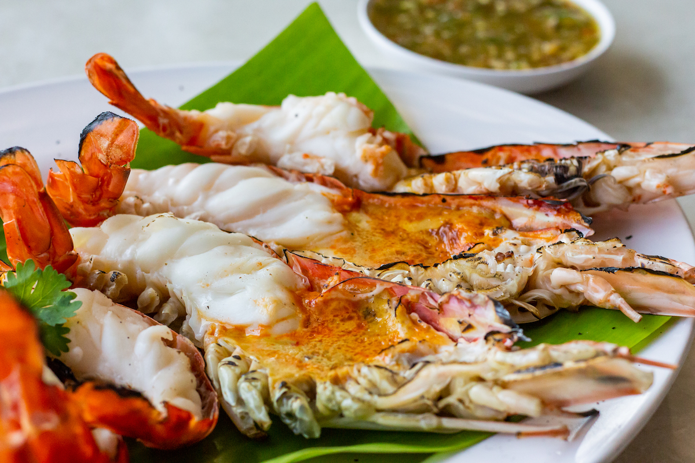
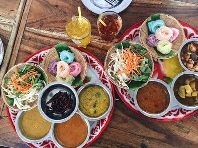
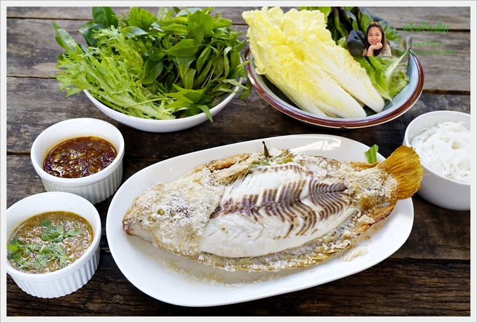

1. กุ้งแม่น้ำเผา
อาหารขึ้นชื่อของปทุมธานี เนื้อหวาน สด อร่อย
2. ขนมจีนปทุม
ขนมจีนที่มีน้ำยาหลากหลาย รสชาติเข้มข้น
3. ปลาเกลือเผา
ปลาสดจากแม่น้ำเจ้าพระยา ย่างเกลือหอมกรุ่น
อาหารขึ้นชื่อของปทุมธานี เนื้อหวาน สด อร่อย
ขนมจีนที่มีน้ำยาหลากหลาย รสชาติเข้มข้น
ปลาสดจากแม่น้ำเจ้าพระยา ย่างเกลือหอมกรุ่น